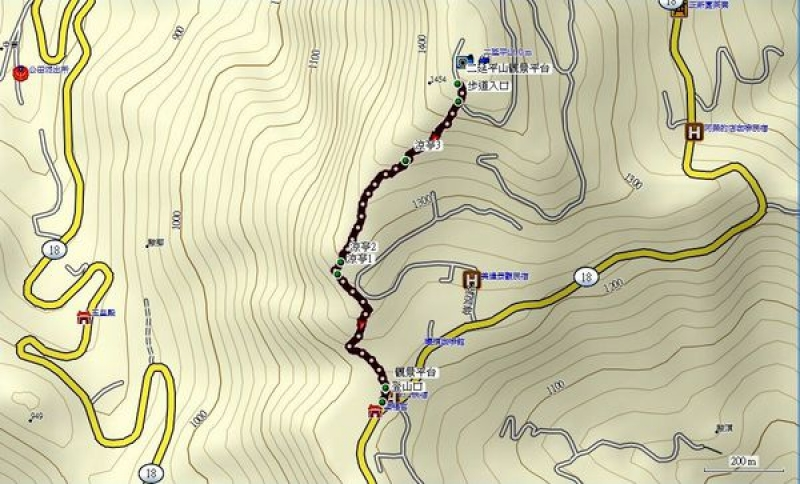

知不知番路
關於番路
番路氣象
步道地圖
嘉義縣番路鄉
二延平步道
二延平步道從建設完成至今已有18年之久。為考量遊客使用安全，110年9月10日起將封閉二延平步道進行工程改善，預計111年4月完工重新開放。
二延平步道的入口位於台18線53.5K公路旁，入口即有觀景平台，步道約1150公尺，約60分鐘，步道路徑是早年山上居民開墾時，從隙頂山與二延平山間的空隙通過，步道的視野展望絕佳，夕陽、雲海的氣勢十足，更是攝影取景秘境，步行來回約50分鐘。
步道資訊
難度等級
★☆☆☆☆
交通方式
開車前往、大眾運輸
所屬山系
阿里山系
車輛可到達入口
附有停車場
海拔高度
1248 ~ 1454 公尺
管轄單位
阿里山國家風景區
高度落差
206 公尺
聯絡電話
05-2593900
步道全長
1 公里
山屋營地
無
步道型態
單向來回
入山申請
否
路面狀況
石階、木棧道、泥土路
途經自然保護區 / 保留區
否
建議時間
半天
地質敏感區範圍
是 ， 山崩與地滑
路徑軌跡
GPX（健行筆記）
/
手機可通訊點
土石流潛勢範圍
否
詳細路線
